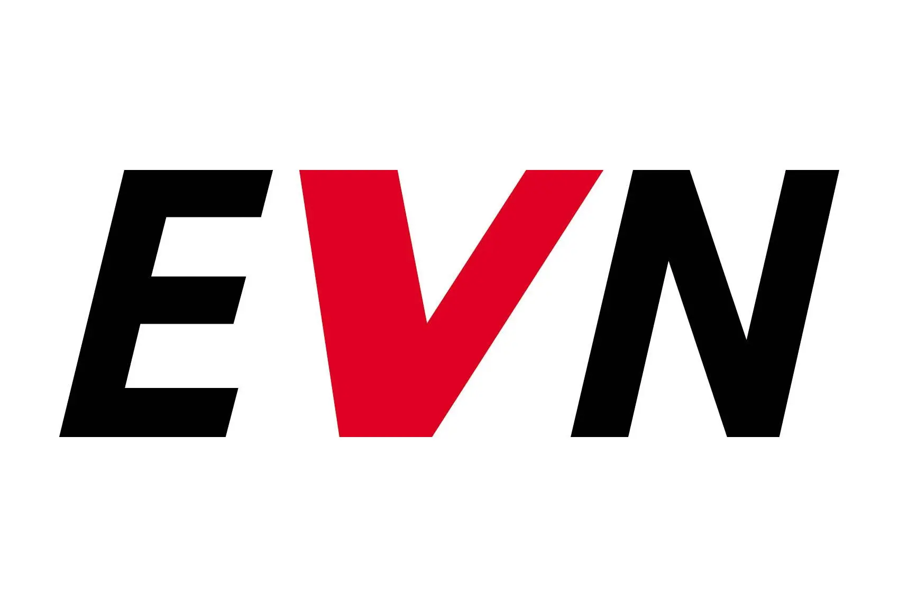
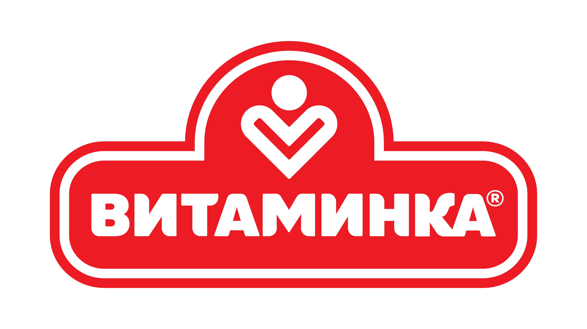
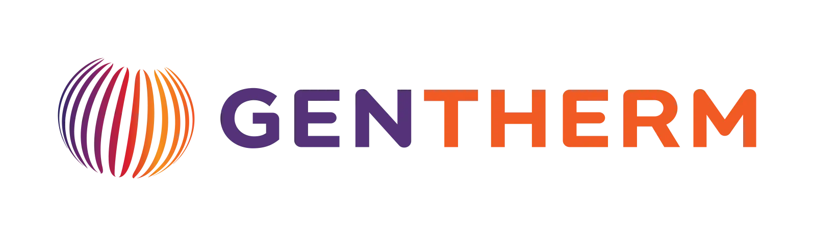
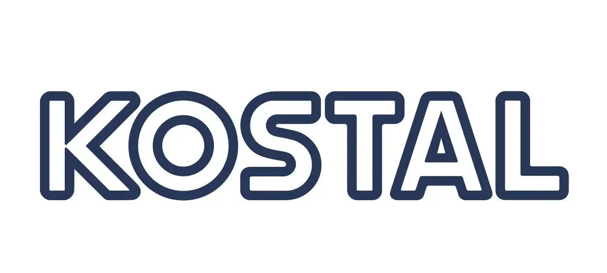
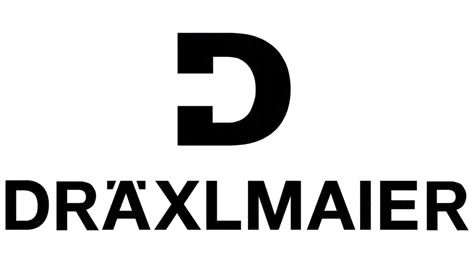
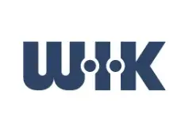
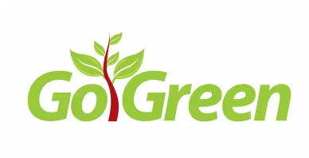

СОУ „Ристе Ристески
- Ричко“
Средно Општинско Училиште „Ристе Ристески - Ричко“ - Прилеп. Лидер во техничкото образование и дуалната настава.

Промотивната недела на СОУ "Ристе Ристески - Ричко“ ја заокруживме со хуманитарната театарска претстава "Втората смрт на Кузман Капидан", реализирана од учениците во организација на училишната ученичка заедница и драмската секција.

Голем успех на зонските натпревари во футсал за Ричко!

Вo, духот нa хуманоста и заедништвото, учениците од СОУ „Ристе Ристески- Ричко" преку активност на Училишната ученичка заедница Младинска Организација - Ричко , внесоа радост и насмевки таму каде што најмногу значат.

Bo pамките на низата активности посветени на нашиот патрон Ристе Ристески — Ричко, денес ce одржа литературно читање што ја славеше моќта на зборот.
Учениците од СОУ „Ристе Ристески – Ричко“ успешно ги завршија двете обуки „Вовед во младинско учество и демократски процеси во училишна средина“.
Денес, во просториите на нашето училиште СОУ „Ристе Ристески-Ричко“, доминираше позитивнта енергија, креативноста и меѓусебната едукација!






